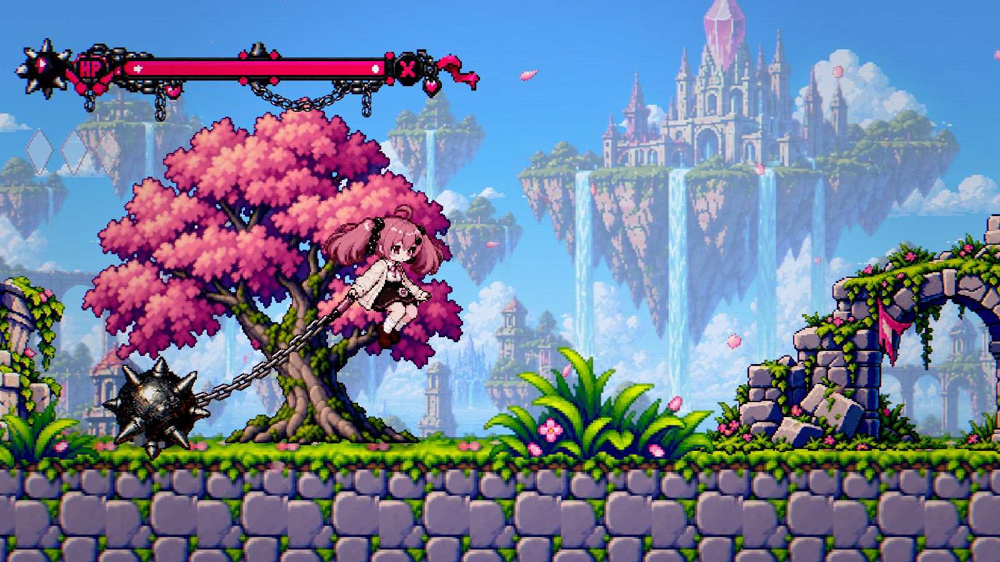
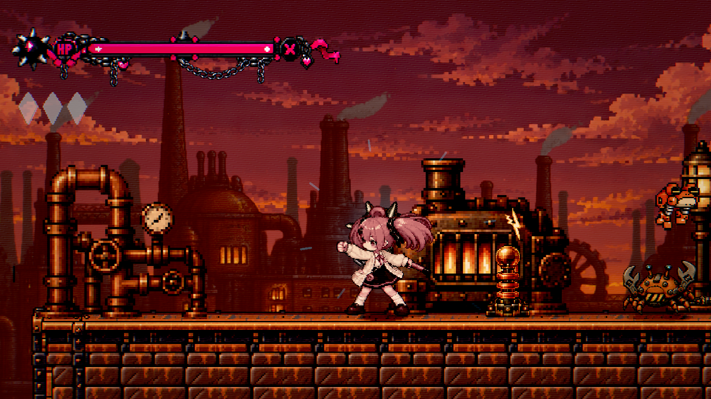
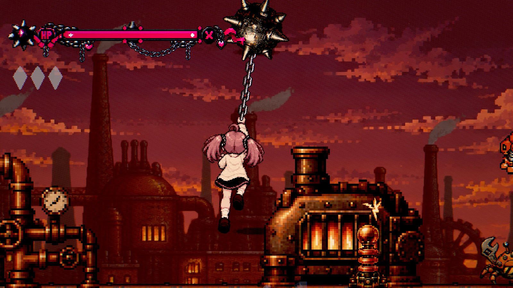

Idleと同じ原点で、実際に取り込んだSpriteを整数倍表示。上は2倍、下の連続コマは原寸です。再生はコマ確認用で、ゲーム中の状態遷移・物理を再現するものではありません。鉄球と鎖は別オブジェクトなのでSpriteには含みません。
チャージ走行・空中の追加差分、中央の一本の鎖を登る4コマも選択できます。接続点や実際の球の動きはゲーム内画像とPlay Modeで確認してください。



実装・設定値・検証範囲